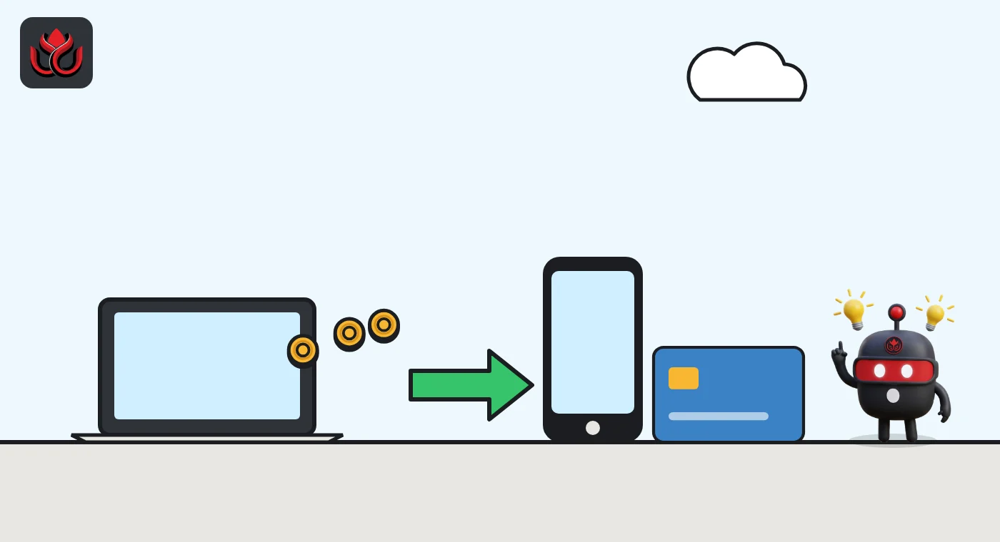
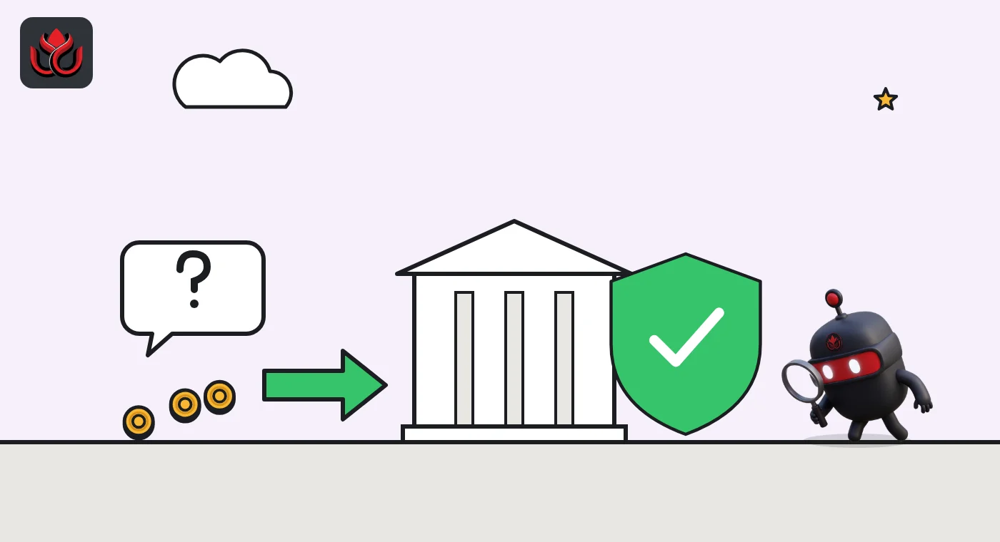

Send USDC on 12 blockchains, get dollars: OnePay adds Stripe-powered checking deposits
Since October 30, 2026, select US OnePay customers can send USDC from an outside wallet straight into OnePay Checking. Stripe's Bridge converts it to dollars with no conversion fee at launch, but the coins are not FDIC insured on the way in.
Key points
- OnePay launched stablecoin deposits on October 30, 2026: select US customers can fund OnePay Checking with USDC sent on 12 blockchains, including Tempo, Base, Solana and Ethereum.
- Bridge, Stripe's stablecoin platform, creates the deposit addresses, runs compliance checks and converts the USDC to US dollars; customers never hold a stablecoin balance.
- OnePay charges no conversion fee at launch, but network fees still apply, transfers may be irreversible and the stablecoins themselves are not FDIC insured.
What launched
Select OnePay customers in the US can now send USDC, a dollar stablecoin, on 12 blockchains straight into their checking account and get US dollars. The fintech announced stablecoin deposits on October 30, 2026, in a post by Pierce Harger, its head of crypto. The feature is open to "select U.S. customers" for now. OnePay did not say how customers are picked or when everyone gets it.
OnePay named four of the 12 chains: Tempo, Base, Solana and Ethereum. It points customers to its Help Center for the full list. No other stablecoin is accepted yet, though the company says it will look at adding more over time.
The pitch fits in one line from the post: "Crypto in, dollars out, ready when it lands." OnePay calls this the first of several stablecoin features it plans to build.
How a deposit works
The steps are short. In the OnePay app, a customer opens the Cash Control section and taps "Deposit stablecoins." The app shows a deposit address. The customer then sends USDC on a supported network from an outside wallet or an exchange account.
The money lands in OnePay Checking as US dollars. There is no separate stablecoin balance to manage. OnePay says most deposits arrive within moments, but timing depends on the network and on the required checks, and some can take longer.
A few details matter for users:
- Fees: no conversion fee at launch and no OnePay service fee. Blockchain networks may still charge their own fees, which go to the network, not OnePay.
- Value: the dollar amount depends on the stablecoin's value at conversion and may be less than the amount sent.
- Mistakes: stablecoin transfers may be irreversible, so a wrong address or network can mean lost funds.
- Limits: the announcement does not list deposit minimums or maximums.

Stripe's role through Bridge
The plumbing comes from Stripe. OnePay uses Bridge, which it describes as Stripe's stablecoin orchestration platform, to create and secure each deposit address. Bridge receives the incoming USDC, runs the compliance checks, converts it to dollars and hands the funds over, and OnePay then credits the checking balance. The legal fine print says stablecoin transfers and conversion are provided by Bridge Building Inc. under an agreement with OneProgress Assets LLC.
Stripe's own documentation lists Bridge as the part of its stack for stablecoin money movement and issuance, with APIs to create wallets and virtual accounts, accept funds, convert assets and send payouts. The same Stripe stablecoin page also lists the Tempo blockchain and the OUSD stablecoin as ecosystem partners. For background on OUSD, see our coverage of its September launch.
What is insured and what is not
OnePay says it is a financial technology company, not a bank. Its banking services come from Coastal Community Bank or Lead Bank, both members of the FDIC. Once the money is in an approved checking account, it is FDIC insured up to $250,000 per depositor through pass-through insurance, if certain conditions are met. That coverage protects against the failure of the bank, not of OnePay.
The stablecoins are a different matter. OnePay states that they are not insured by the FDIC, the SIPC or any federal agency, are not deposits and may lose value. The protection starts only after Bridge has converted the USDC to dollars.

OnePay's three crypto moves in 2026
OnePay adds 10 crypto assets, taking OnePay Crypto to 12 assets, with Zero Hash handling trading and custody
OnePay partners with Tempo, the payments blockchain incubated by Stripe and Paradigm, for stablecoin payouts and account funding, and plans to run a Tempo validator
Stablecoin deposits go live for select US customers: USDC on 12 blockchains, converted to dollars by Bridge
How big USDC is
USDC is a large and liquid coin to start with. As of November 2, 2026, CoinGecko showed a market value of about $71.28 billion, a circulating supply of about 71.31 billion tokens and $8.18 billion in 24-hour trading volume, ranking it sixth among all crypto assets. Its price was $0.9995. For more on how it compares with Tether's coin, see our USDT vs. USDC explainer.
USDC on November 2, 2026
US$ billion
Source: CoinGecko, as of November 2, 2026
LC Insight analysis
This section is our reading of the facts above, not a statement of fact.
- We think the best part of this launch is what it hides. Customers never touch a stablecoin balance or a conversion screen, so it works like a faster incoming wire for people who already hold USDC on an exchange or in a wallet.
- The chain list looks like a bet on Stripe's stack. Tempo, the chain Stripe helped incubate, comes first in OnePay's list, ahead of Base, Solana and Ethereum, and OnePay already plans to run a Tempo validator.
- The natural next step is the other direction: dollars out to stablecoins. OnePay's April deal with Tempo covered payouts as well as funding, though OnePay has not announced such a feature.
What's next
- When OnePay opens stablecoin deposits beyond select customers
- The full list of 12 supported chains and any deposit limits
- Whether other stablecoins, such as OUSD, are added
- Whether conversion stays free after the launch period
Disclaimer. This article is based on public information and the sources listed below as of the update time shown. It is for information only and is not investment, legal or tax advice. Figures may change as companies and authorities publish new data.
Sources
- OnePay, Introducing Stablecoin Deposits Powered by Stripe (October 30, 2026)
- OnePay, OnePay and Tempo partnership (April 28, 2026)
- OnePay, OnePay Broadens Crypto Platform With 10 New Assets (March 20, 2026)
- Stripe Docs, Stablecoin orchestration with Bridge
- Stripe Docs, The Stripe stablecoin ecosystem
- CoinGecko, USDC market data (November 2, 2026)